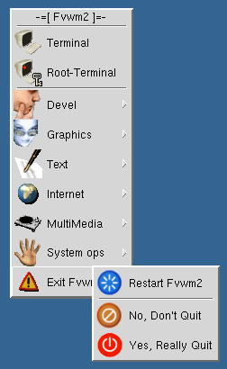

Fvwm gives you lots of ways to decorate menus. This page shows sample menus that have been contributed to fvwm. Click on the menu to download the Fvwm commands needed to configure the menu.
|
|
Sample menu submitted by Dan Espen using background pixmaps. Click here for the background pixmap. |
|  | Sample menu submitted by Julien Coron. The pixmaps are available the here. |
If you have a sample menu that you would like to contribute you can mail it to fvwm-workers@fvwm.org. The sample menu must show one item selected, and one item grayed out. A grayed out menu item can be created by including a "Delete" selection and bring the menu up on a window that sets the do not delete property. FvwmTalk can be used for this.